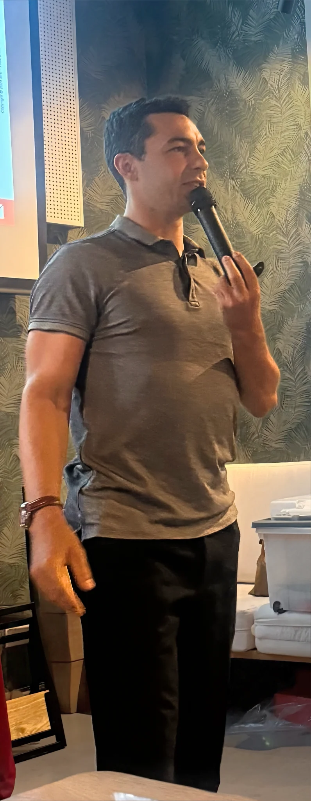

Le marketing prend de la valeur quand il passe à l’action.
Je relie trois mondes : j’enseigne le marketing, j’aide les dirigeants à le piloter et, avec Solayia, je le transforme en dispositifs concrets pour gagner des clients.

Sur le terrain ↗Trois métiers.
Une même exigence.
Une bonne stratégie doit pouvoir s’expliquer simplement, être portée par une équipe et se traduire en actions mesurables.
J’ai appris à faire ce lien au Crédit Agricole Toulouse 31, au contact des dirigeants, des équipes terrain et de projets de communication à grande échelle. Aujourd’hui, je mets cette expérience au service des étudiants, des entreprises et des entrepreneurs.
Mon rôle change selon votre besoin. Ma méthode reste la même : comprendre le vrai problème, choisir les priorités et faire avancer les bons projets.
Comment je travailleÀ quel moment puis-je vous aider ?
Former les professionnels de demain.
Des cours, ateliers et cas concrets en marketing, communication, sponsoring et événementiel, nourris par l’expérience du terrain.
02 / PiloterDonner un cap au marketing.
Une direction marketing et communication à temps partagé pour clarifier la stratégie, aligner l’équipe et choisir les actions utiles.
03 / DéployerFaire travailler le digital.
Avec l’équipe Solayia : sites web, visibilité, acquisition et réputation en ligne pensés pour soutenir des objectifs commerciaux.
Des projets réels. Des décisions réelles.
Avant de conseiller ou d’enseigner, j’ai conçu et porté des projets de communication 360° : avis clients, prise de parole des dirigeants, influence, événementiel, radio et acquisition digitale.
De l’idée à l’impact.
Le même réflexe dans une salle de cours, une réunion de direction ou un projet web : rendre les choix lisibles, puis leur donner une suite concrète.
Découvrir mon approche pédagogiqueComprendre le contexte
Les objectifs, les clients, les moyens et ce qui bloque aujourd’hui.
Choisir les priorités
Un cap clair, des arbitrages assumés et des indicateurs utiles.
Mettre en mouvement
Les personnes, les messages et les outils qui feront la différence.
Une école à accompagner ?
Une stratégie à construire ?
Un projet à lancer ?
Expliquez-moi le contexte en quelques lignes. Je vous répondrai avec une première piste de travail.
Parlons de votre projet
Enseignement, stratégie ou site web : partagez votre besoin en quelques lignes.
Le formulaire sécurisé s’ouvre dans un nouvel onglet. L’adresse de réception d’Adrien n’est pas affichée sur ce site.